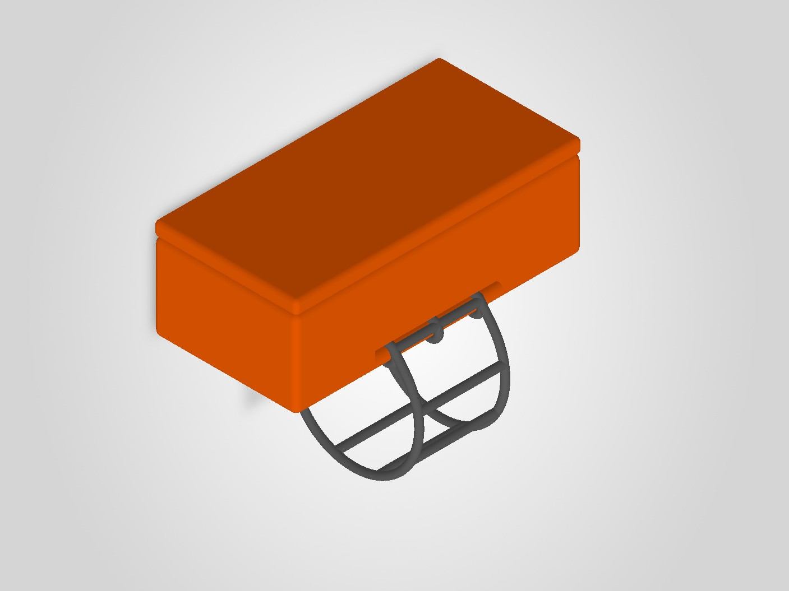
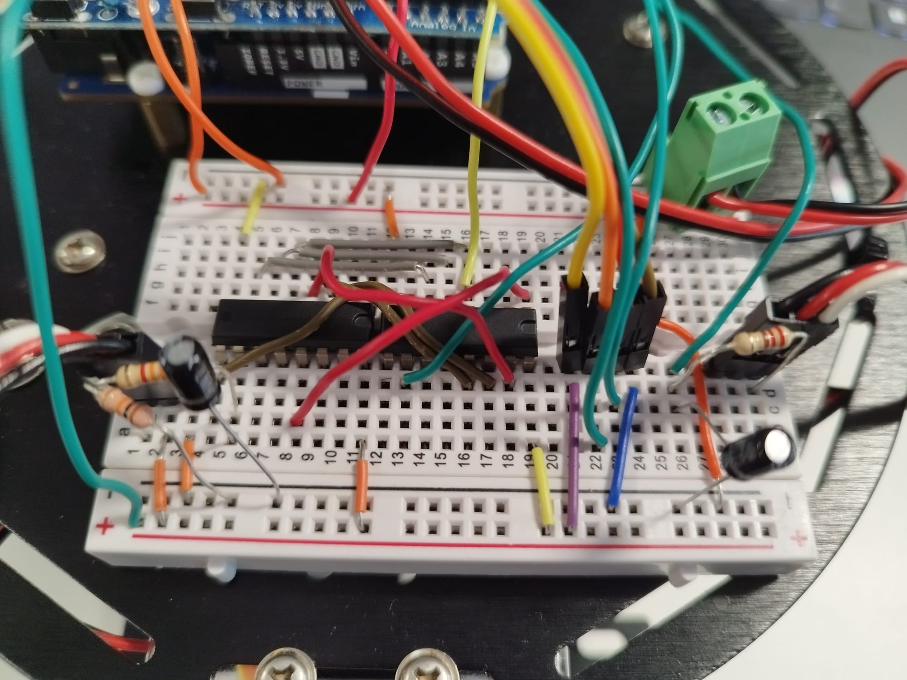
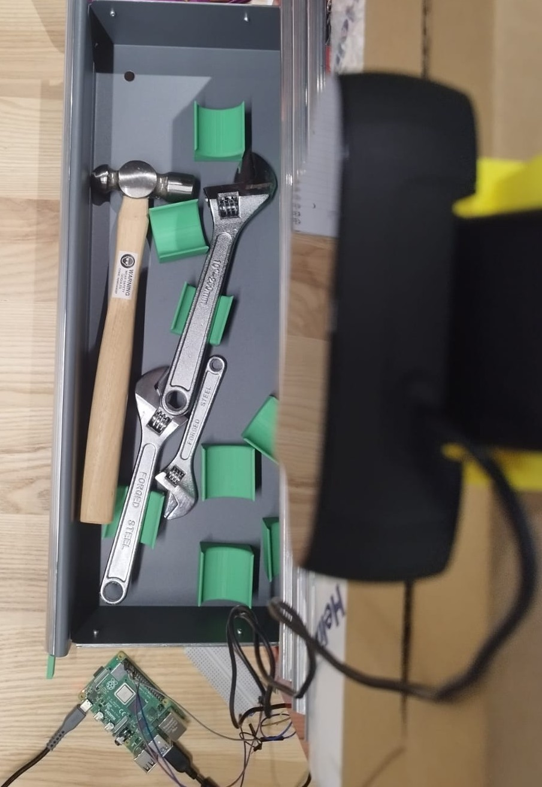
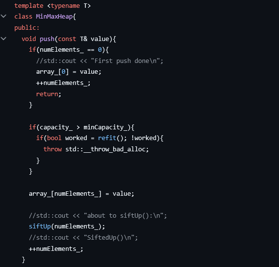

Adam Gillespie
3rd Year Mechanical & Manufacturing Engineering Student at Trinity College Dublin.
Developed an Arduino-based robot that follows lines, stops for obstacles and tracks programmed speed profiles, with remote control through a custom Wi-Fi interface. Implemented PID speed control, interrupt-driven line following, sensor drivers and wheel-encoder circuitry, integrating the hardware and software using FreeRTOS..

Developed a camera-based tool-tracking prototype during a two-day team hackathon. Used a fine-tuned MobileNetV2 model on a Raspberry Pi to recognise hammers, with OpenCV for webcam capture and a soldered limit-switch circuit to detect when the toolbox drawer was opened.

Implemented a double-ended priority queue in C++ using a min–max heap, providing constant-time access to both the smallest and largest elements. Developed the underlying heap operations and array storage as part of a wider collection of custom data structures.

A selection of CAD models and engineering drawings created through coursework and independent practice.